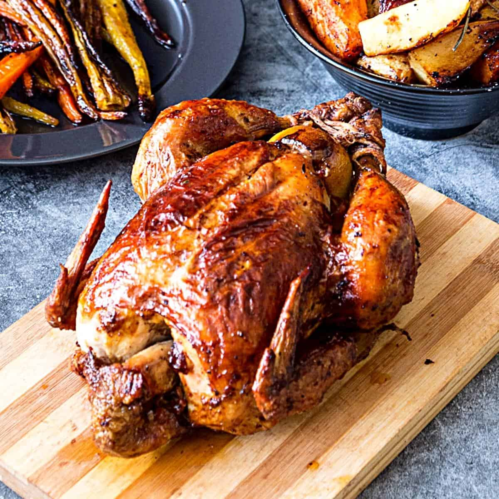

Roast chicken stuffing recipe

Roasted chicken
INGRIDIENTS
- 1 medium whole chicken
- 40g butter
- Salt and pepper, to season
- 6 rashers of streaky bacon
- bunch of sage, for garnish
- bunch of sage, for garnish
- 4 large onions, finely chopped
- 10 sage leaves, chopped
- 125g breadcrumbs
- salt and pepper
- 1 egg, beaten
STEPS
- Preheat oven to 190°C/375°F/Gas 5.
- First, make the stuffing. Melt the butter and add the onions. Gently cook for about 10 mins until the onions are soft. Allow to cool and add the sage,
breadcrumbs and season. Add just enough egg to moisten the mixture and leave until ready to use.
- Stuff the chicken from the neck end, and pack about two-thirds of the stuffing inside.
Close the skin over the stuffing and secure it with a cocktail stick or small skewer.
- Shape the remaining stuffing into balls and place on a baking sheet. Cook in the oven with the chicken,
but don't put them in until the final 25 mins of cooking.
- Place the chicken in a roasting tin and spread with butter. Season the chicken with the salt and pepper to taste.
Arrange the bacon in a criss-cross pattern across the breast. Cover loosely with foil.
- Roast in the centre
of oven for 20 mins per 500g plus 10-20 mins extra, basting twice during cooking.
- Fifteen mins before end of cooking time, remove the foil, remove the bacon, baste and increase the heat to 220ºC/425°F/gas 7, to give the skin that final golden crispiness. When it is cooked, remove it from the oven and cover it with foil. Leave to rest for at least 1
0 mins before serving. The juices should run clear when the thigh is pierced.
If not, cook further.
- Garnish with a bunch of sage and serve with a selection of roasted vegetables.
HOME-PAGE